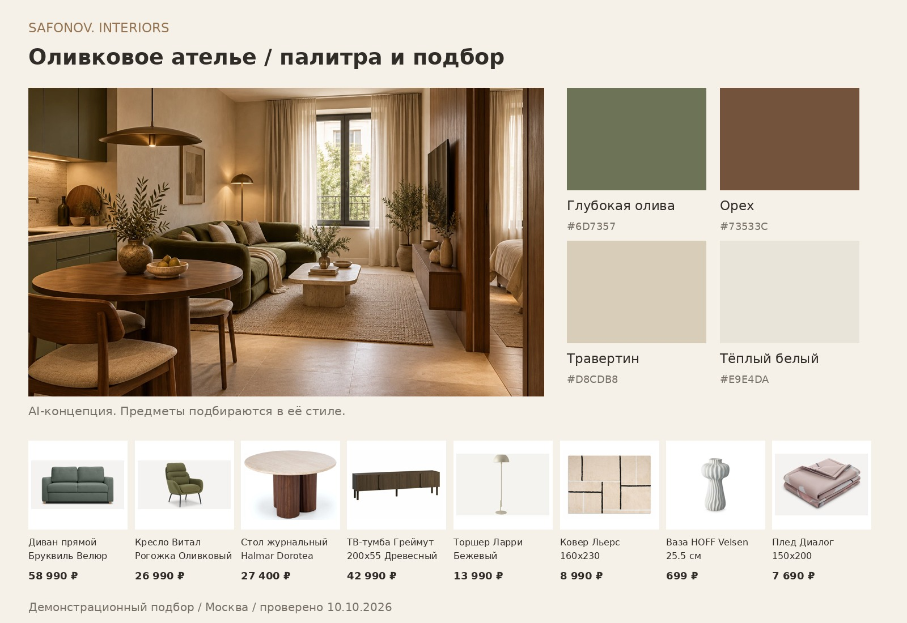

MOSCOW PREMIUM / Авторская концепцияMOSCOW PREMIUM / Original concept · 15 / Level Мичуринский · этапы 3 и 4Level Michurinsky · phases 3 and 4 · 42,1 м²42.1 m²
Оливковое ательеOlive atelier
Гостиная 17,2 м² собрана вокруг глубокого оливкового оттенка, ореха и светлого травертина. Чёткие линии мебели сочетаются с мягкой обивкой и дневным светом.The 17.2 m² living room pairs a deep olive tone with walnut and pale travertine. Clean furniture lines meet soft upholstery and natural daylight.
Москва · Очаково-МатвеевскоеMoscow · Ochakovo-MatveyevskoyeОтдельная спальняSeparate bedroomСовременный интерьер с оливковым акцентомContemporary with an olive accent
AI-визуализация · Атмосфера и материалы концепцииAI visualization · Concept atmosphere and materialsГостиная · 17,2 м²Living room · 17.2 m²Вид за окном условныйExterior view is illustrative
Идея проектаProject idea
Как здесьHow life будет жить человек.fits here.
Для пары: отдельная спальня, компактная кухня и гостиная с местом для неспешных ужинов.For a couple: a separate bedroom, compact kitchen and a living room with space for unhurried dinners.
01
Сохранить диван вдоль левой стены гостиной и ТВ-зону у перегородки спальни, как на исходном плане.Keep the sofa along the left living-room wall and the TV area against the bedroom partition, following the source plan.
02
Выделить обеденную зону между кухней и гостиной; использовать лёгкие по силуэту стулья и проверить проход к спальне.Define a dining area between the kitchen and living room; choose visually light chairs and check the route to the bedroom.
03
Собрать кухню 5 м² в спокойные фасады и повторить орех в хранении гостиной, сохранив цельность интерьера.Give the 5 m² kitchen calm, unified cabinetry and repeat walnut in the living-room storage for a coherent interior.
Свет в течение дняLight throughout the day
Отдельный свет над обеденным столом, мягкая подсветка ТВ-зоны и торшер у дивана. Рабочая поверхность кухни получает собственный свет.Dedicated lighting above the dining table, soft TV-area lighting and a floor lamp by the sofa. The kitchen worktop has its own task light.
Цвет и материалColour & material
Палитра проектаProject palette
Ориентиры для отделки и текстиляA direction for finishes and textiles
Глубокая оливаDeep olive#6D7357
ОрехWalnut#73533C
ТравертинTravertine#D8CDB8
Тёплый белыйWarm white#E9E4DA
Тактильная сторона интерьераThe tactile side of an interior
Выбор в деталях.Considered details. Материалы с характером.Materials with character.
Концептуальный подбор: фактура, оттенок и сочетание. Точные образцы и спецификации — на следующем этапе.A concept selection of textures, shades and combinations. Exact samples and specifications follow at the next stage.
01
Орех с матовым покрытиемMatte-finished walnut
02
Травертин с неброским рисункомSubtly patterned travertine
Исходная планировка застройщика: корпус 8, этаж 6, условный номер 8-1-49. Визуализация — концепция гостиной; план сохраняет отдельную спальню и кухню.Original developer plan: building 8, floor 6, reference 8-1-49. The render is a living-room concept; the plan retains a separate bedroom and kitchen.
Исходный план принадлежит указанному застройщику. Эта самостоятельная концепция не является заказом от застройщика или владельца квартиры. AI-визуализация передаёт дизайн-идею; точная геометрия, проёмы, мебель и оборудование уточняются после обмеров. Виды за окнами условные, а не фактические виды из квартиры.The source plan belongs to the credited developer. This independent concept was not commissioned by the developer or apartment owner. The AI visualization communicates a design idea; geometry, openings, furniture and equipment are refined after measurements. Exterior views are illustrative, rather than actual views from the apartment.
Образец результата / Одна комнатаSample deliverable / One room
От настроенияFrom a mood к списку покупок.to a shopping list.
Демонстрационный бриф: гостиная 17,2 м², Москва. Условный бюджет на мебель и декор — 200 000 ₽. Глубокая олива, орех и светлые фактуры. Это самостоятельный пример, не выполненный заказ.Demonstration brief: a 17.2 m² living room in Moscow. Assumed furniture and decor budget: RUB 200,000. Deep olive, walnut and pale textures. This is an independent sample, not a completed commission.

AI-визуализация задаёт направление. Товары подобраны в её стиле и могут отличаться от изображённой мебели.The AI visualization establishes a direction. Selected products follow its style and may differ from furniture in the image.
Подбор по открытым карточкам магазинов. Проверено 10.10.2026.Selection from public store listings. Checked 10 October 2026.
80 × 80 × 46 см; круглая столешница80 × 80 × 46 cm; round topПод заказ по предоплате; доставка от 45 днейPre-order with advance payment; delivery from 45 daysМДФ с пленкой под травертин; ореховый цвет основания. Это имитация, не натуральный камень.MDF with travertine-look film and walnut-colour base; not natural stone.
12,5 × 25,5 × 12,5 см (Ш × В × Г)12.5 × 25.5 × 12.5 cm (W × H × D)Доступно для доставки в Москве по карточке магазинаAvailable for delivery in Moscow as listed
150 × 200 см150 × 200 cmНаличие указано магазином; остаток уточняетсяListed as in stock; confirm remaining quantity
1
7 690 ₽
Выбранные предметыSelected items187 739 ₽
Доставка, сборка, отделка и услуга концепции в эту сумму не входят. Цены и наличие изменяются; перед покупкой проверяем выбранную комплектацию, размеры, проходы и доставку.Delivery, assembly, finishes and the concept service are excluded. Prices and availability change; check the selected configuration, measurements, circulation and delivery before buying.